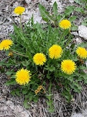
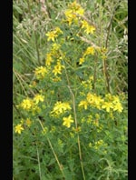
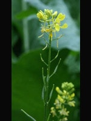
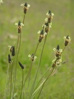
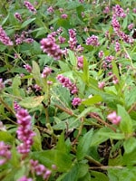
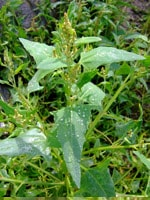
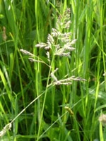
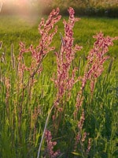

Website vergroten/verkleinen: cltr-knop + scrollen
Veel voorkomende onkruiden in weiland
Gesorteerd op kleur
| Geel | |||
 Boterbloem |
 Gewoon biggenkruid |
 Jacobskruiskruid |
 Paardenbloem |
|
Stinkende gouwe |
 Sint Janskruid |
Zilverschoon |
 Zwarte mosterd |
terug naar boven
| Wit | |||
 Akkerwinde |
 Haagwinde |
 Madeliefje |
 Muur |
|
 Smalle-weegbree |
 Witte dovenetel |
 Witte-klaver |
Zwarte-nachtschade |
terug naar boven
| Paars/roze | |||
 Akkerdistel |
 Akkerwinde |
 Bastaardklaver |
 Hondsdraf |
 Paarse-dovenetel |
 Rode klaver |
 Perzikkruid |
|
terug naar boven
| Groen | |||
 Gladde-witbol |
 Kweek |
 Melganzenvoet |
 Spiesmelde |
|
 Straatgras |
|||
terug naar boven
| Blauw, Rood, Oranje | |||
 Hondsdraf |
 Rode klaver |
 Zuring |
 Heermoes |